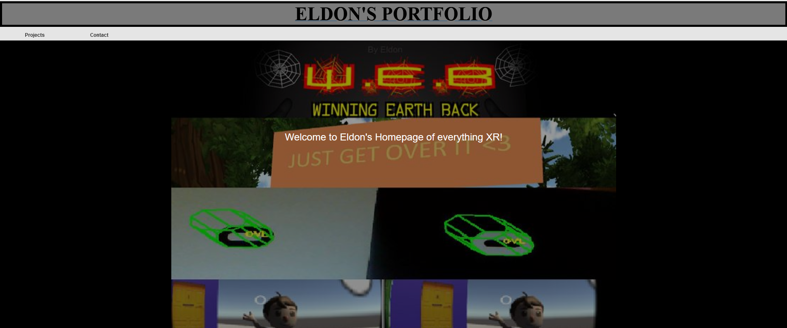

Portfolio

This project describes what I have changed to this portfolio site
Browsers
HTML, CSS,Javascript
Visual Studio Code, Bootstrap, Figma
Sep 2016, Feb 2023
In Sep 2016, I made a portfolio on github. 7 years later I wanted to improve my website
In 2016 I only used HTM, CSS and Bootstrap. No Javascript. After 7 years, I wanted to add Javascript so I can add more functionalities to my site. I wanted to prototype what my site could look like using Figma first
In 2016, I started making a basic website where the user can select a project from the navbar.
Each section then had a title, description and awful color scheme
The process section was terribly explained and the images had a terrible looking hover effect.
I only had one page - the home page. The hero section was just a fancy looking background with a line of text. And the page was not responsive so the text was tiny on mobile and ipad
In 2023, I decided I have to upgrade my website, create different pages, make it responsive and have a better color scheme. Instead of dark, try light and follow the 60-30-10 rule.
I used Figma first to design my ideas first so I know what it would look like on different platforms. Such as pc:
ipad
mobile
Now that I knew what I wanted, the first task was to figure out how to implement that navbar and put it on different pages. I learned I can use templates and shadowdom. This allowed me to add the navbar component onto every page instead of copy pasting the same code over and over. At the same time, I learned how to make the site responsive using the media query so that on a mobile, the navbar becomes a burger menu and the menu would open from the side
After the navbar came the hero section. I learned that a hero section should have a hero image, name, what you do and a call to action button. I learned that the display property can use flex, so I took advantage of that and used flex value when the site is wider than 1440px. If it's smaller than all the elements would just be lined up top to bottom
I then added an about which explains a bit more detail of who I am. After I started working on the personal project section. This was what I looked forward to most because I wanted to learn how to filter tabs. Using W3 schools, I learned I can use javascript to remove class name and get element by id. Using those to my advantage, I can add a "show" class to the projects that should be displayed based on which tab the user selected. I made sure the tabs color scheme were still close to the pages main colors
The professional experience section was very fun to work on because this allowed me to really play around with how responsive UI works. In PC mode, I wanted the company logo and information to be side by side. However, on mobile, I wanted them to be on top of each other. By using the display property, in pc I used the flex value, and in mobile I used the grid value. In PC I would alternate the logo location by taking advantage of the grid-template-area property.
The skills section allowed me to add images from bootstrap. The footer allowed me to add some contact info. When the user clicks on the contact logo, I would make use of the window.open so it will open another tab. I make use of window.open only if the link brings users to a different site. If the site is still in my portfolio, I would open in the same tab.
I wanted to alternate the background colors. I did that by creating a bg-controlled class to all the sections. Then using javascript I would alternate adding bg-odd or bg-even class. In my css, if I find a bg-odd I would add the primary background color, if I find a bg-even, I would add a secondary background color.
Creating the pages for personal projects and professional experience was challenging. At this point I already knew about templates and shadow dom. This helped me create a "template" for all my pages, but I did not know how to replace the content. After looking deeper, I learned I can use the slot element. Which is used on this page!
This site is the result. You're looking at it. I learned alot about javascript, and new html and css properties and attributes.